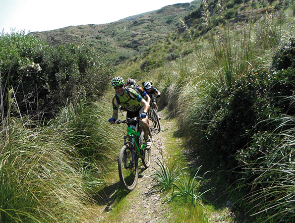

СЛОУ МЕНОРКА, спокойный досуг
Если вы любитель пешеходных экскурсий, вы правильно сделали, выбрав Менорку. Если вы предпочитаете велосипед, без сомнения, вы не ошиблись, приехав на остров. Если ваша страсть – это лошади и вы хотите покататься верхом, Менорка – прекрасный выбор. Здесь вы найдете все необходимое для спокойных занятий спортом. Пеший туризм, велосипед, верховые маршруты, гольф, теннис, крикет… Все это возможно на острове.
Здесь множество мест для пешеходных прогулок и экскурсий. Наденьте подходящую обувь и пройдите по любому островному маршруту, начиная с Конной дороги (Camí de Cavalls) и или какому-нибудь из ее двадцати отрезков, следуя рекомендациям компаний-специалистов. Как на побережье так и внутри острова есть подготовленные участки разной сложности и бонусом за приложенные усилия будет великолепный пейзаж, окружающий вас. Не правда ли, дорога становится легче под аккомпанемент моря или пение птиц в зеленой листве?
Если вы предпочитаете велосипед, Менорка – идеальная велодорожка. Обратитесь за советом в компании, занимающиеся велотуризмом, остров будто создан чтобы проехать по нему, крутя педали. Маршруты есть на любой вкус. От простых до требующих подготовки. Хотя остров и кажется равнинным, некоторые дороги удивят вас своей сложностью. Но в помощь вам всегда будут удивительные пейзажи Менорки вокруг.
Обойти остов пешком или проехать на велосипеде – хорошие предложения, но возможность пересечь его верхом на лошади превзойдет все ожидания. Представьте себе, проехать по дикому пляжу на столь почитаемом благородном животном. Здесь умеют заботиться о лошадях, и Конная дорога тоже существует неспроста. Доверьтесь экспертам, садитесь верхом и откройте Менорку, не касаясь ногами земли. Впечатляет?
Это были три главных по привлекательности варианта активного туризма – сендеризм, велосипедный спорт и верховая езда. Но есть и много других видов спорта, доступных на острове, и необходимые для этого площадки и инструкторы. Попробуйте игру в крикет в климате Средиземноморья, оставленную здесь англичанами. Прекрасный "коктейль”, не правда ли? А если вам нравится гольф, отправляйтесь в Сон Парк (Son Parc), где располагается поле, подходящее как начинающим, так и продвинутым игрокам. И это только несколько из имеющихся в вашем распоряжении возможностей.
На Менорке можно отдохнуть, позаботиться о своем здоровье и заняться спортом. Менорка ждет вас. Потренируемся?